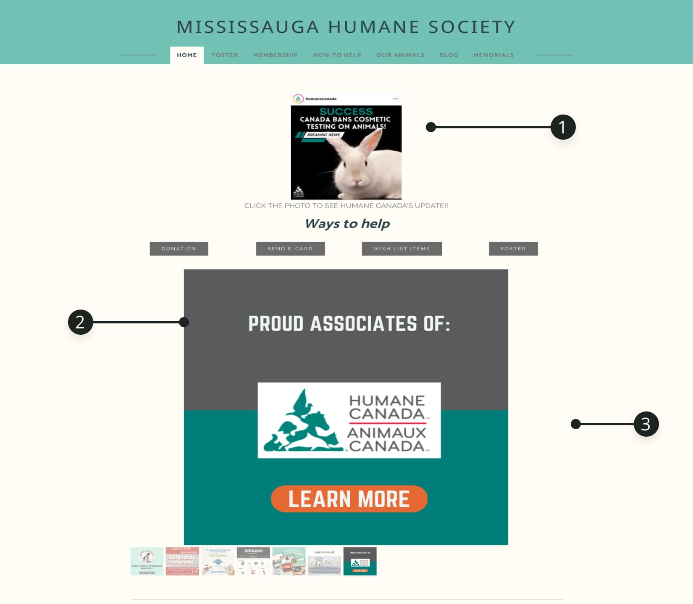
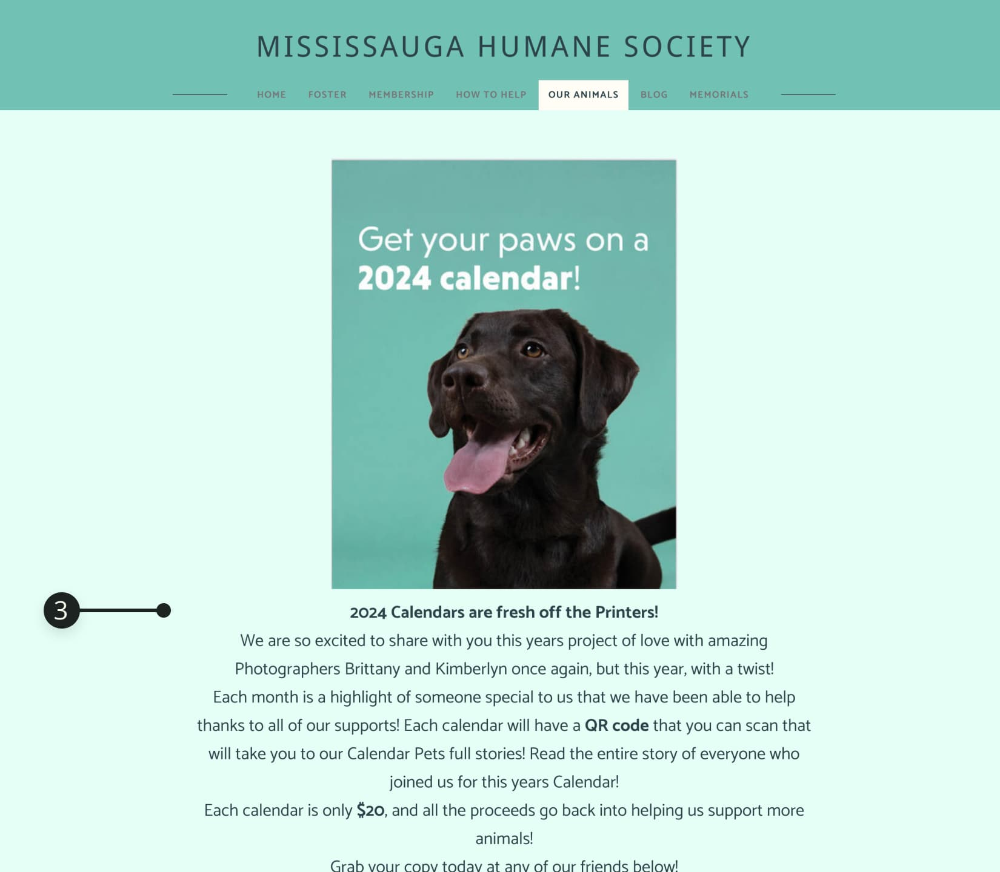

Mississauga Humane Society
Roles :
UX/UI Designer
Duration :
4 Weeks
Overview
The Mississauga Humane Society” is dedicated to finding forever homes and loving families for local animals in need. However, the current website doesn't feature adoptable animals upfront or information about the adoption process which negatively impacts the user experience leading to lower pet adoption rates. How might we increase adoption rates and reduce friction for potential pet owners to ensure a seamless and convenient adoption experience?
The Not-So-Cute Side of the Mississauga Humane Society


Problem
It doesn't feature adoptable animals upfront.
-
Sectioin of way to help is too big and not intuitive
Pages are not sharing same colour scheme.
Proposed Solutions
Priority the content of homepage
Provide a clear Information Architecture
Apply visual consistency
"
the current website doesn't feature adoptable animals upfront or information about the adoption process which negatively impacts the user experience leading to lower pet adoption rates.
"
Research
My research first centred around the one-on-one interviews would help me understand users' adopting experience and specific issues the website would need to address. Secondly, observe the competitive landscape to understand how other animal rescue websites are addressing similar issues.
What I found
-
Users are confused about the first fold of the website
Most websites put the animals on hero image.
-
Users are unsure about the credibility of this website due to the inconsistency
Ideation
User Persona
User Task Flow

Sketch
Prototyping
UI Elements

Mockup

Explore Figma Prototype
Testing
User Test
What's the tester said?
“It was easy to follow and intuitive! Kudos guys!”
"Navigation system was very easy to navigate, the process to adopt was a bit overwhelming but also I understand that a lot of information is needed to submit an adoption application."
What can be improved?
Re-Streamline the adoption application
Compare
Before
After


1. Use Logo to highlight the recognition
2. Make the Nav bar more intuitive
3. Add a hero fold with call to action
Before
After


1. Create content encourage people to help
2. Streamline flash cards to 3 ways to help
Reflection
This redesign project has provided me with valuable insights into constructing a new website, focusing on Information Architecture, organizing the structure, and prioritizing content. I subsequently developed a design system to effectively convey the website's tone. In the near future, I aspire to engage with stakeholders, sharing my ideas to contribute towards helping furry friends find their forever families.
Take Away
1 "Have no fear of perfection -- you'll never reach it."
Iterative process will help ensure that the design meets the needs and expectations of both your team and your users.
2 "Never skip User Test"
Users often discover aspects that you hadn't considered. I always look forward to their opinion then apply it back to my design.

Previous Project Name